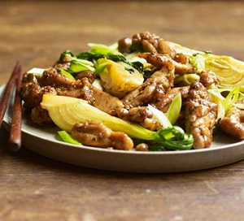

Salt and pepper chiken

Description
This salt and pepper chiken is cooked with pak choi in soy and honey, with Chinese five spice
Ingredients
- 500g skinless, boneless chiken thighs
- 1 tsp Sichuan peppercorns
- 1 tbsp cornflour
- 1 tsp Chinese fivespice powder
- 1 tsp sesame seeds
- tbsp olive oil
- 1 tbsp soy sauce
- 1 tbsp honey
- 250g pak choi
- chopped coriander, sliced spring onions and cooked rice to serve
Steps
- Cut the chicken thighs into strips. Crush the salt with the peppercorns in a pestle and mortar, then mix with the cornflour and five-spice and tip into a sandwich bag. Tip the chicken into the bag and shake well to coat in the flour mixture.
- Toss the sesame seeds in a pan over a medium heat and lightly toast, for around a minute, then add the olive oil. Add the chicken and cook for 7-8 mins until golden brown.
- Mix the soy and honey and tip into the pan along with the Asian greens, cook for 2-3 mins further until everything is well coated and the greens are cooked through. Serve topped with coriander and sliced spring onions alongside some cooked rice.